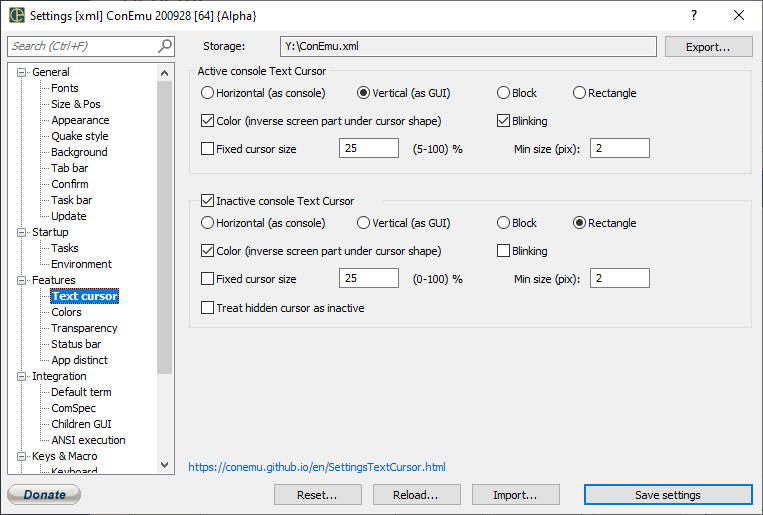

Color (inverse screen part under cursor shape) ON - cursor emulates console behaviour (sort of colors inversion) OFF - cursor is white (color#15) on dark backgrounds, and black (color#0) on light backgrounds; also this checkbox affect appearance of ‘Block’ cursors
Blinking When "Blinking" is ON - cursor blinks with standard cursor blink rate.
Fixed cursor size Ignore cursor size in real console, always show cursor with specified size
Specified size of cursor in percents. Use together with ‘Fixed cursor size’
LTEXT
Min size (pix) Specified minimal size of cursor in pixels (regardless of ‘Fixed cursor size’)
Color (inverse screen part under cursor shape)
Blinking
Fixed cursor size
LTEXT
Min size (pix)